ECOPINET · NONPROFIT SOCIAL ENTERPRISE · CO-FOUNDER
EcoPinet
Turning waste into value. Upcycling pineapple waste into sustainable, regenerative, seed-embedded paper packaging.
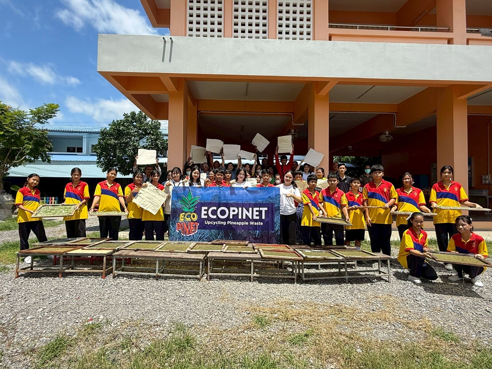
- ROLE
- Co-founder · Chief Creative Officer
- TIMELINE
- June 2022 – July 2026
- TEAM
- 3 co-founders
- SKILLS
- Creative direction · Field research · Pitching · Community workshops
MY PART
- Co-founded EcoPinet and led its creative direction as Chief Creative Officer
- Pitched to judges, investors and audiences at AIHM, Agrithon and FarmExpo
- Interviewed pineapple farmers on their farms
- Ran hands-on paper-making workshops with farmers and students
02 · IMPACT
Our impact
03 · VALIDATION
From pitch to market
Each step put the product in front of people who could say no: judges, experts, buyers and the farmers themselves.
Tap a milestone, or let it play


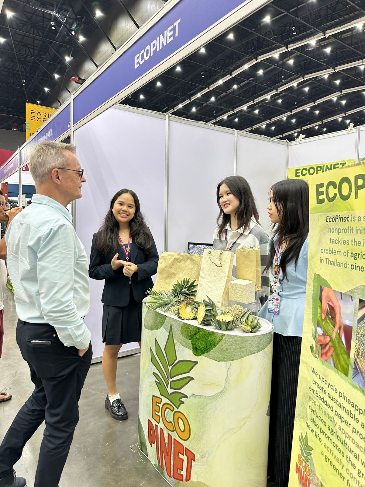

04 · PROBLEM
Three problems, one material
We started with pineapple in Thailand, where about half of every plant is waste: around 2.7 million tons of leaves and stems a year. The problems that waste causes are global.
05 · PROCESS
From leaf to paper, by hand
We started in the field: visiting farms, talking to farmers about how they clear their land, and collecting over 260 kg of leaves and stems. Then we tested binders until one held. Okra mucilage was plant-based, non-toxic and cheap to make in bulk.
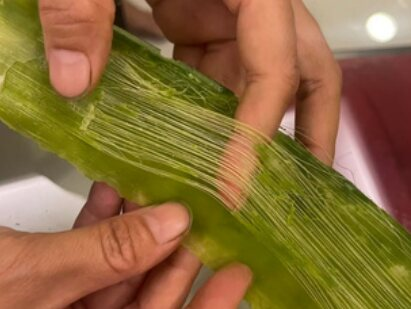
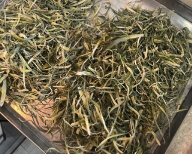
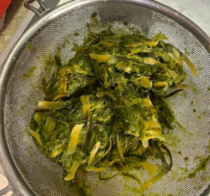
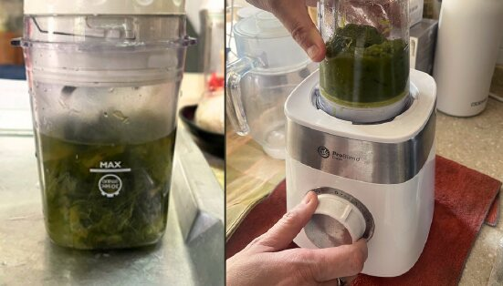
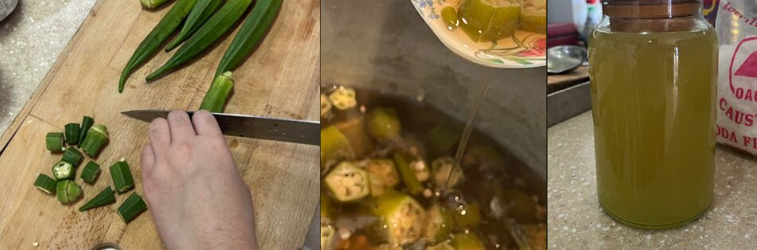
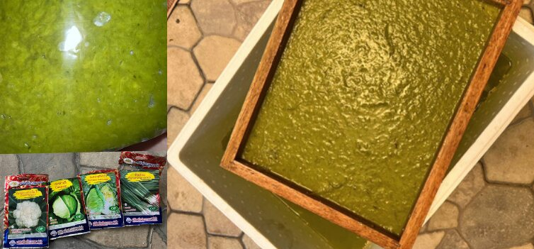
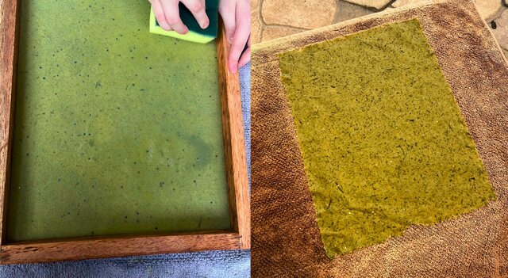
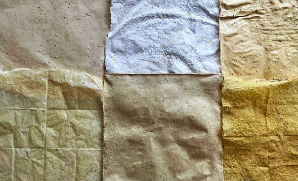
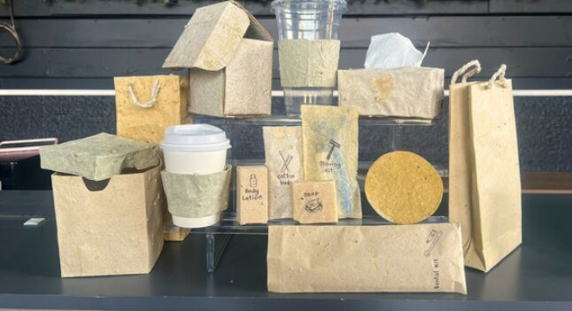
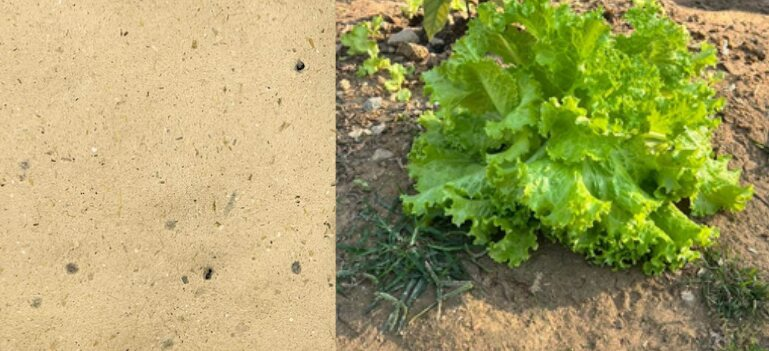
01 / 10
Drag or tap the photo to deal the next card


In the field with a pineapple farmer, and the first fibers.
Four decisions that shaped it
Tear it up, plant it, water it, and it breaks down in a few weeks into fertilizer and new plants.
Up to 84.1 MPa tensile strength, and better against weight and moisture than normal paper.
Hospitality uses huge amounts of single-use plastic and needs to show sustainability.
Simple enough to teach, so farmers can make the paper and earn from waste they used to burn.
06 · PRODUCT
One material, a full product line
Paper bags in three sizes, boxes, tissue boxes, wrapping paper and packaging cushion, plus hotel amenity kits and coffee sleeves for cafés.


THE ECOPINET APP
Turning farm waste into a game worth playing
Farmers schedule leaf pickups, track what they earn, and collect merit points they can trade for tools, seeds and fertiliser, instead of burning.
Screens from our app mock-up; numbers on them are sample data.
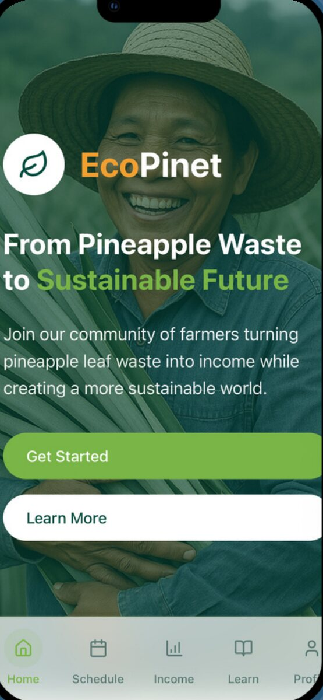
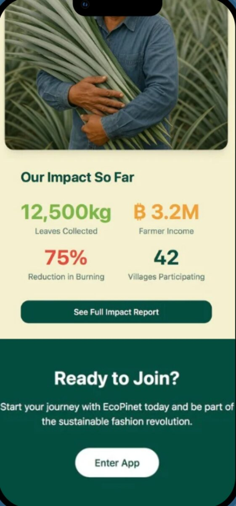
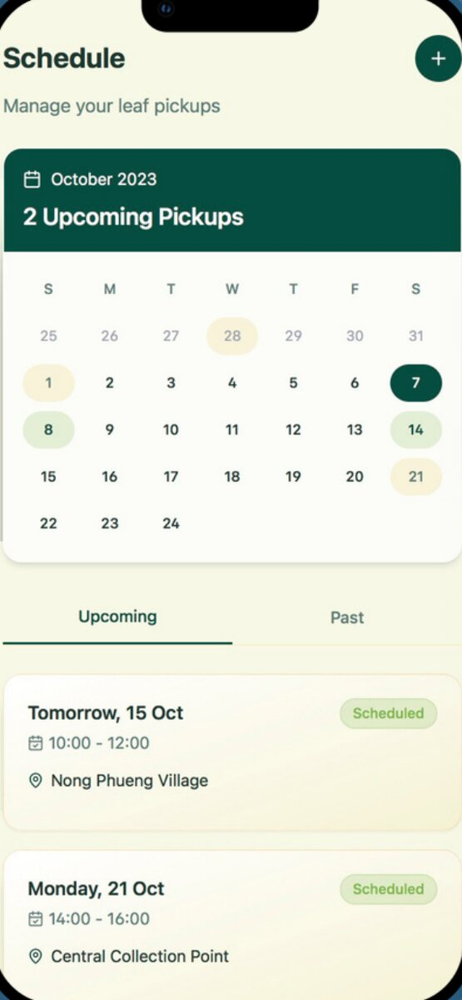
07 · COMMUNITY
Giving it back
The point was never just a product. In July 2025 we ran a workshop at a school in a pineapple-farming community, with farmers, parents and students.
We explained why burning leaves hurts the air they breathe, then made paper together: stripping fibers, pressing sheets and folding them into boxes and bags. Everyone left with a step-by-step guide so they could keep going without us.

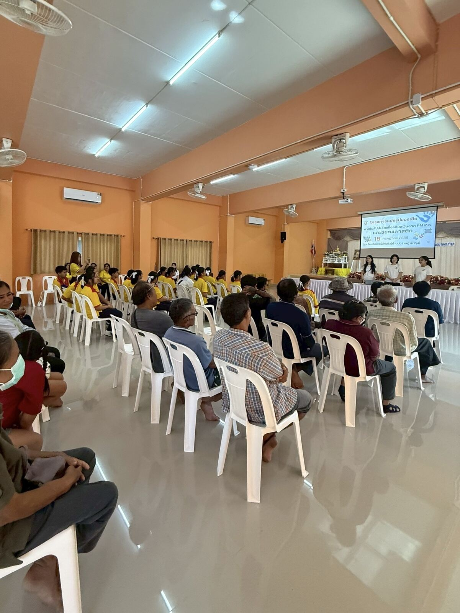


08 · TAKEAWAYS
What I’m taking with me
- The hardest part wasn’t the paper. It was showing that a material can carry a story: farmers who stop burning, a hotel that can show guests what it’s doing, and packaging that grows something after it’s used.
- Proof beats pitch. EcoPinet took an idea from a pot of boiling leaves to a winning pitch and a room full of farmers making paper.
- It’s where I found the space I love most, between design and business.
09 · THANKS FOR READING :)
More work
 SideBy Concept · 2026
SideBy Concept · 2026
A second pair of eyes for conversations that start to feel off.
 DuoPoker Concept · 2026
DuoPoker Concept · 2026
Poker on Duolingo, taught by a dealer who has seen every hand.